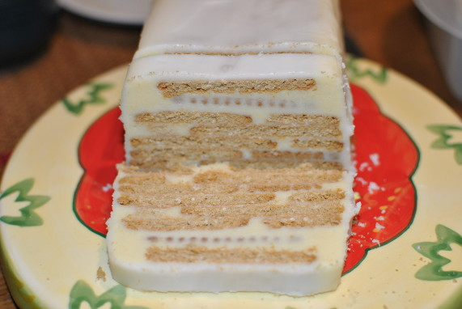

Weißer Hund

- Zubereitung: ca. 40 Minuten
- Kühlen: ca. 6 Stunden
- Für 1 Kastenform mit 20 cm Länge
Zutaten
- 120 g Kokosfett
- 200 g weiße Schokolade
- 2 frische Eier
- 300 g Puderzucker
- 300 g rechteckige dunkle Kekse
- 2 EL Zitronensaft
- Pergamentpapier für die Form
Zubereitung
- Das Kokosfett schmelzen. Schokolade hacken und getrennt schmelzen. Eier und 130 g Puderzucker schaumig schlagen. Erst die Schokolade, dann das Kokosfett nach und nach einrühren.
- Die Kastenform mit Pergamentpapier auskleiden. Den Boden mit einer Schicht Keksen auslegen. Mit etwas Creme bedecken. Kekse und Creme abwechselnd daraufschichten. Den Kuchen mindestens 6 Stunden kühl stellen.
- Kuchen stürzen und das Papier abziehen. Den übrigen Puderzucker und Zitronensaft zu einem Guss verrühren. Den Kuchen damit einstreichen. Den Guss fest werden lassen.